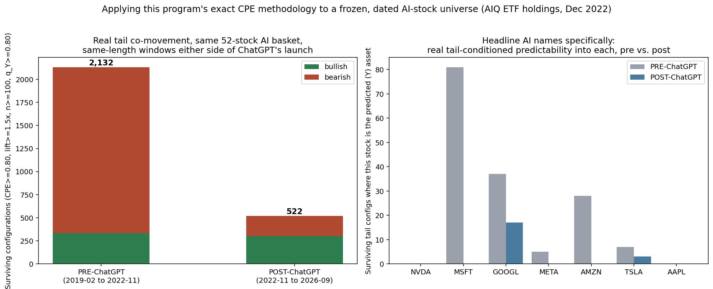
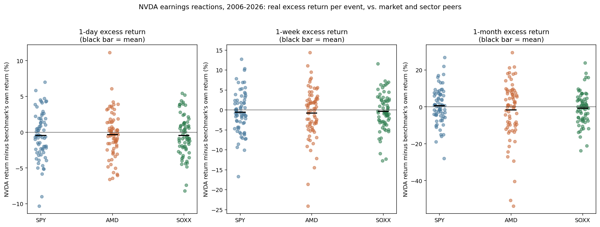
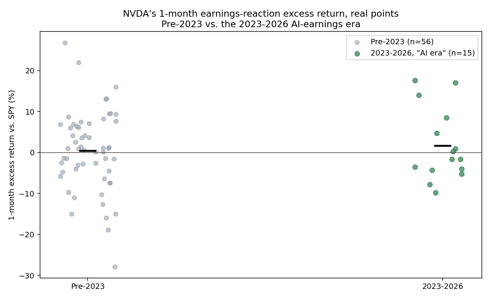
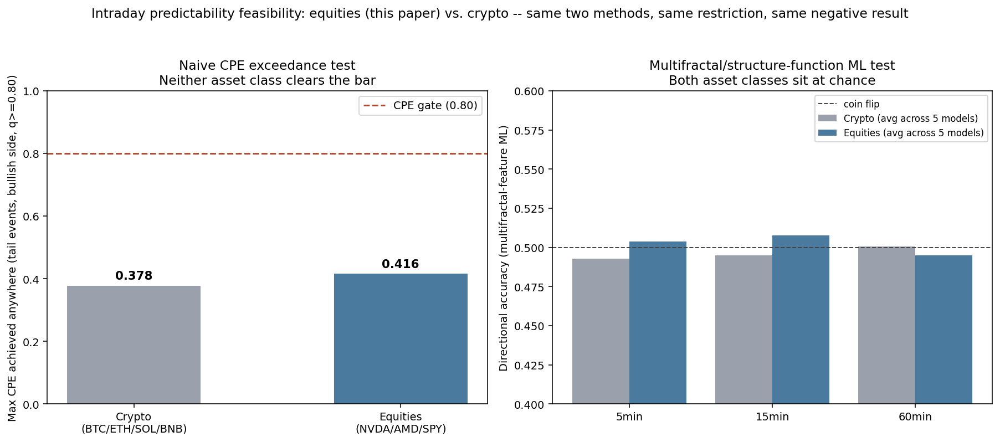

By Arun Ramanathan
CPE research series — standalone research note
The AI boom carries a set of assumptions that are rarely checked against data directly: that AI-exposed stocks now move together more than before, that a bellwether like NVIDIA reliably rallies on its own earnings, and that a theme with this much capital and attention flowing into it should show exploitable short-horizon structure. This paper runs three independent tests of those three claims, using this program’s own standing methodology throughout — real point estimates, genuine replication — and finds no support for any of them: (1) a daily tail-co-movement test, applying the core conditional-exceedance framework to a real, dated AI-stock universe (the 52 US-listed holdings of Global X’s AIQ ETF exactly as they stood in December 2022, not selected with hindsight) in matched windows before and after ChatGPT’s launch; (2) an earnings-reaction event study, covering all 71 of NVIDIA’s quarterly reports since 2006 against the S&P 500, AMD, and the semiconductor sector; and (3) an intraday feasibility test, applying the exact two methods already used to find no short-horizon signal in crypto (naive conditional-exceedance and multifractal/structure-function machine learning) to real 1-minute NVDA, AMD, and SPY data.
Test 1 finds real tail-level co-movement falling from 2,132 surviving configurations in a length-matched window before ChatGPT’s launch to 522 after — and NVIDIA, Microsoft, Meta, Amazon, and Apple each show zero surviving tail-level predictability from the rest of the basket in the post-launch window. This decline survives a direct robustness check: excluding the COVID crash from the pre-window does not shrink it, it grows to 2,678, making the decline sharper, not an artifact of one crisis episode. Test 2 finds NVIDIA beats the S&P 500, AMD, and the semiconductor sector on only 44–55% of its earnings reactions depending on the window — close to even — and its one-month return specifically relative to its own sector peers has not improved through the 2023–2026 AI earnings supercycle, if anything running more negative than before 2023. Test 3 finds the same result already found in crypto: zero surviving configurations under the naive-exceedance method (maximum CPE achieved anywhere 0.416 for equities, 0.378 for crypto under an identical restriction, both well short of the 0.80 bar), and directional accuracy at chance (49.2–51.4%) under the machine-learning method, across three horizons and five model families.
Three independently designed tests, three different timescales, three different targets — the same answer throughout: the specific, tradeable patterns the AI narrative implies do not survive contact with the data, even though the underlying price trend is real.
Three claims travel with the AI boom, each specific enough to check directly rather than assume. First, that AI-exposed stocks now move together more than they used to — a single narrative driving a basket of names should show up as increased tail co-movement. Second, that a bellwether name like NVIDIA reliably rallies on its own earnings reports, now more than ever given how closely each quarter is watched. Third, that a theme receiving this much capital and attention should carry exploitable short-horizon structure, detectable in intraday price data, where the earlier version of this question — tested on crypto — found nothing. This paper tests each claim against a real, dated dataset, using the same methodology and the same discipline against overclaiming that the rest of this research program applies throughout.
2.1 AI-stock universe. The basket is the 52 US-listed holdings of Global X’s AIQ ETF (tracking the Indxx Artificial Intelligence & Big Data Index) exactly as reported on the fund’s own holdings page on December 1, 2022, recovered from an archived Wayback Machine snapshot of that page rather than selected with the benefit of hindsight. The full archived holdings list (80 names, including non-US listings excluded from this analysis) and the exact 52-ticker US-listed subset are both retained alongside this paper’s code. Seven of the original 59 US-listed names (ABMD, SPLK, SMAR, CCCS, INFA, EXAI, VRNT) were acquired or delisted since 2022 and have no continuous post-2022 price series; they are excluded from the analysis rather than silently back-filled, which is itself a real fact about this frozen universe, not a data-quality artifact to paper over. Daily prices for the remaining 52 tickers are sourced via Yahoo Finance.
2.2 NVIDIA earnings data. All 71 of NVIDIA’s resolved quarterly earnings reports (reported EPS available) from 2006 through August 2026 are sourced directly from Nasdaq/Yahoo Finance’s own earnings-date record, not hand-selected. NVIDIA reports after market close, so the reaction window for each event begins the next trading day, not the report date itself.
2.3 Intraday data. Real 1-minute consolidated-tape (SIP) bars for NVDA, AMD, and SPY, October 2023 through September 2026 (~294,000 regular-session bars per ticker after excluding extended-hours trading, which is thin and gappy and would confound a short-horizon test with a liquidity artifact), sourced from Alpaca’s free market-data tier.
3.1 Method. The predictor is this program’s core conditional-exceedance (CPE) methodology, applied within the 52-stock basket: for each pair of instruments, each pair of lookback/lookforward windows (1, 5, 10, 21, 63, 126, 252, 300 days), and each quantile threshold (0.50 through 0.99), the hit rate of a forward exceedance conditional on a past exceedance is computed, gated at the same CPE ≥ 0.80 / lift ≥ 1.5× / n ≥ 100 thresholds used throughout this program. The comparison splits the sample at November 30, 2022 (ChatGPT’s public launch), using two length-matched windows of 961 trading days each — February 7, 2019 to November 29, 2022 (pre), and November 30, 2022 to September 30, 2026 (post) — so the comparison isn’t confounded by one window simply being longer. Quantile thresholds and the exceedance gate are computed separately within each regime’s own return distribution, isolating whether the conditional structure itself changed rather than just the raw price level. The average pairwise daily-return correlation across the basket is 0.317, in line with this program’s core 161-instrument universe, not the single-factor blob a thematic basket might be expected to produce.
3.2 Results. Across the full parameter grid, surviving configurations fall from 64,059 (12,634 bullish, 51,425 bearish) pre-ChatGPT to 31,436 (16,462 bullish, 14,974 bearish) post. Restricting to genuine tail events (q_Y ≥ 0.80 — the full grid’s “top” results are dominated by a q_Y = 0.50 median threshold, a much weaker bar than real tail behavior), the decline is sharper: 2,132 surviving configurations pre-ChatGPT (334 bullish, 1,798 bearish) to 522 post (304 bullish, 218 bearish). The pre-window’s heavy bearish skew reflects two real crisis episodes it contains (the COVID crash, the 2022 rate-hike selloff) producing mechanical bearish tail co-movement; the post-window is comparatively balanced.

Figure 1. Left: surviving tail-level configurations (q_Y ≥ 0.80) in each length-matched window. Right: for each headline AI name, the number of surviving tail configurations where that stock is the predicted (Y) asset.
Restricted further to the stocks most associated with the AI narrative, the post-ChatGPT window shows zero surviving tail-level configurations with NVIDIA, Microsoft, Meta, Amazon, or Apple as the predicted asset — none of this program’s own conditioning methodology finds real tail-level predictability into any of these five names from elsewhere in the basket, post-launch. Alphabet is the one exception: 17 surviving post-launch configurations, the strongest being a 0.991 hit rate (4.96× lift, n = 112) predicting Alphabet’s own tail moves from Alibaba’s. This is reported as a specific, narrow fact — one large-cap tech name’s tail co-moving with one Chinese ADR’s tail, at a 300-day lookback and lookforward — not explained with a causal story the data doesn’t support.
3.3 Robustness: the COVID crash is not driving this result. The pre-window contains the COVID crash (February–April 2020), raising the question of whether the pre-to-post decline is simply an artifact of one extreme episode. Re-running the identical scan with COVID-crash months excluded entirely from the pre-window’s threshold computation and evaluation set does not shrink the pre-window’s tail-level count — it rises, to 2,678 (321 bullish, 2,357 bearish). The mechanism: removing the single most extreme episode from the distribution used to define the regime’s own 80th-percentile threshold lowers that bar for every other day in the window, pulling the 2022 selloff’s own tail moves more fully into view. The pre-to-post decline is, if anything, sharper once this is accounted for (2,678 → 522, a 5.1× drop) rather than an artifact that disappears under scrutiny.
4.1 Method. For each of NVIDIA’s 71 resolved earnings reports, the cumulative return over the 1-day, 1-week, and 1-month window following the report (starting the next trading day, since NVIDIA reports after close) is compared against the S&P 500 (SPY), AMD, and the semiconductor sector (SOXX) over the identical window. The excess return reported throughout is a real mean difference — NVIDIA’s own return minus the benchmark’s own return, computed directly — not a regression-based market-model adjustment; this matches the standard this program has used since Section 4.4 of the TSMOM paper (Ramanathan, 2026), which found OLS/Jensen’s-alpha-style regression statistics unstable for evaluating this program’s own findings at any sample size.
4.2 Results.
| Horizon | Benchmark | Share positive | Mean excess (%) |
|---|---|---|---|
| 1-day | SPY | 45.1% | -0.46 |
| 1-day | AMD | 43.7% | -0.32 |
| 1-day | SOXX | 45.1% | -0.45 |
| 1-week | SPY | 43.7% | -0.56 |
| 1-week | AMD | 50.7% | -0.80 |
| 1-week | SOXX | 43.7% | -0.37 |
| 1-month | SPY | 54.9% | +0.68 |
| 1-month | AMD | 54.9% | -1.72 |
| 1-month | SOXX | 49.3% | -0.70 |
Table 1. NVIDIA’s real excess return around its own earnings reports, 71 events (2006–2026), against three benchmarks and three horizons.

Figure 2. Every event shown individually, not collapsed into an average. The share of events beating each benchmark ranges from 43.7% to 54.9% — close to even in every direction tested, with no horizon or benchmark showing a reliable edge.
A natural follow-up is whether the asymmetry is in the downside — whether misses are punished even if beats aren’t specially rewarded. NVIDIA has missed its own EPS estimate on only 4 of 71 occasions (one further event has no reported surprise percentage and is excluded from this split entirely, rather than miscounted as a miss). Of those 4 misses, 2 (November 2018, August 2022) produced real, sharp, sustained negative reactions (1-month excess of -7.5% and -18.9% vs. SPY respectively); the other 2 (May 2008, a -17.3% EPS miss in November 2022) were followed by flat-to-positive returns within a month (+1.1% and +6.9% vs. SPY). The resulting 4-event mean-on-miss figures (for example, -4.6% 1-month excess vs. SPY) are real but should be read as two extreme observations carrying a small average, not a uniform five-for-five — or even four-for-four — punishment pattern.
The most direct test of whether the AI narrative itself has changed NVIDIA’s earnings-reaction character is a before/after comparison at the calendar boundary where its results became genuinely extraordinary. Comparing the 1-month excess return pre-2023 (n = 56) against 2023–2026 (n = 15):

Figure 3. Real points, not an average alone. The AI-era subset shows roughly as many negative outcomes as positive ones.
| Benchmark | Pre-2023 mean (%) | 2023–2026 mean (%) |
|---|---|---|
| SPY | +0.41 | +1.67 |
| AMD | -1.20 | -3.65 |
| SOXX | -0.29 | -2.25 |
Table 2. NVIDIA’s 1-month post-earnings excess return, before and during the AI earnings supercycle.
Against the broad market, the AI-era figure looks modestly better, though the underlying split (Figure 3) is close to even, not a clean run of wins. Against its own sector peers specifically — the more relevant comparison for whether the AI narrative has given NVIDIA an earnings-reaction edge over the companies it’s most often compared to — the AI-era figure is more negative, not less. NVIDIA’s extraordinary run over this period has not come from the market rewarding its earnings news more than AMD’s or the sector’s; whatever is driving the stock’s performance plays out between earnings reports, not around them.
5.1 Method. This program previously tested whether any usable predictability exists at 1-to-240-minute horizons using real crypto tick data (BTC/ETH/SOL/BNB, 1-minute Binance bars, one year, 525,600 bars per ticker), under two independently designed methods: a naive conditional-exceedance gate (identical construction and thresholds to the core daily framework, applied at short horizons) and a multifractal/structure-function feature set (the same rolling cascade-decomposition features used in this program’s daily predictability-limit work) feeding five model families (OLS, XGBoost, LightGBM, Random Forest, MLP) in a genuine walk-forward evaluation with a purged train/test boundary. Both methods found nothing: zero of 73,728 configurations cleared the naive-exceedance gate under the original, broader sweep, and the ML approach produced negative R² and directional accuracy within a point or two of chance across all horizons and models. For a precise, directly comparable magnitude against this paper’s equities test, the naive-exceedance gate’s maximum achieved CPE was recomputed from the same cached crypto data under the identical restriction used below (bullish side, genuine tail quantiles only, q ≥ 0.80): 0.378, well short of the 0.80 bar. This section applies the identical two methods, unchanged, to real NVDA/AMD/SPY 1-minute SIP bars instead of crypto — the direct equities analogue, on a different asset class with genuinely different market microstructure (scheduled sessions and market makers, versus continuous 24/7 crypto trading).
5.2 Results.

Figure 4. Left: maximum CPE achieved anywhere under the naive exceedance test, against the same 0.80 gate. Right: directional accuracy under the multifractal-feature ML test, averaged across five model families, at each horizon.
Under the naive exceedance test, zero of 41,472 tested configurations cleared the CPE ≥ 0.80 / lift ≥ 1.5× / n ≥ 100 gate across NVDA, AMD, and SPY at horizons from 1 to 240 minutes. The maximum CPE achieved anywhere (bullish side, restricted to genuine tail quantiles, q ≥ 0.80) was 0.416, close to and consistent with crypto’s own 0.378 under the identical restriction — both asset classes miss the 0.80 bar by a wide, comparable margin, not a close call in either case.
| Horizon | Equities avg. dir. acc. | Crypto avg. dir. acc. |
|---|---|---|
| 5 min | 0.504 | 0.493 |
| 15 min | 0.508 | 0.495 |
| 60 min | 0.495 | 0.501 |
Table 3. Directional accuracy, averaged across five model families, multifractal-feature ML test. Both asset classes sit within a point or two of 0.500 (chance) at every horizon.
Under the ML test, directional accuracy for equities sits at 49.2% to 51.4% across every model and horizon tested, within the same narrow band around chance that crypto showed (48.7% to 50.3%). R² is negative for almost every model/horizon combination in both asset classes; the 60-minute equities horizon additionally shows real instability (XGBoost R² as low as -138.6), a sign of a model overfitting sparse features rather than finding a subtle real signal.
Three independently designed tests, at three different timescales (multi-year regime comparison, monthly earnings cycle, 1-to-240-minute intraday), on two different data sources (daily and intraday prices), using two different statistical approaches (conditional exceedance and regression-free excess-return comparison) and, in the third case, two further independently designed methods layered on top — all point the same direction. Real tail-level co-movement among AI-exposed stocks has not increased since the moment usually credited with starting the AI boom; it has fallen, even after accounting for the one obvious confound (crisis-episode density) that could have explained the decline away. NVIDIA’s own earnings reports, the single most-watched recurring event in this narrative, show no reliable market-beating reaction, and whatever edge the stock has carried through its most extraordinary quarters has not come from earnings days specifically outperforming its peers’ earnings days. And short-horizon intraday data, tested with the same two methods that already found nothing in crypto, finds nothing in AI-exposed equities either — if anything, a cleaner miss than crypto’s.
None of this is evidence against AI stocks as a real phenomenon at the level of the sustained price trend, which this paper does not dispute and is not designed to test. It is evidence that the specific, tradeable patterns casually assumed to accompany that trend — tighter co-movement, reliable earnings pops, exploitable short-horizon structure — are not there when checked directly, under the same real-point-estimate discipline this program applies to every other question it has asked. This extends a pattern first established at the level of architecture, training depth, and decision-layer sophistication (Papers 12–16): more obvious, narrative-driven assumptions about where an edge “should” exist do not survive contact with real data any more reliably than more sophisticated methodological attempts did.
The AI basket is one fund’s definition, not the only reasonable one. AIQ’s December 2022 holdings are a real, dated, third-party-defined universe, chosen specifically to avoid picking today’s known winners with hindsight — but a different thematic ETF (or a semiconductor-only universe, or a hand-curated list) could show a different result. This paper reports what this specific, defensible choice of universe shows, not a claim that every possible AI-stock definition would agree.
Seven of the original universe’s names no longer exist as continuous, independent tickers. ABMD, SPLK, SMAR, CCCS, INFA, EXAI, and VRNT were acquired or delisted since December 2022 — a real fact about the churn in this sector over the period studied, not a data-quality issue, and these names are excluded rather than back-filled with a successor series that would change what’s being measured.
The GOOGL/BABA pairing in Section 3.2 is reported, not explained. A single, specific, statistically-gated result (one stock’s tail moves conditioned on another’s, at one lookback/lookforward combination) is real but narrow; no mechanistic story for why these two names specifically co-move at the tail is offered, because the data available here doesn’t support one.
The earnings-reaction sample is real but not large in the extreme-value sense. 71 events is a meaningful sample for a share-positive or mean-excess statistic, but the miss-specific statistics (Section 4.2) rest on only 4 real miss events, 2 of which drove most of the observed effect — appropriately sized for what it is, not a basis for high-precision claims about what happens on NVIDIA’s next miss.
The “AI era” boundary (January 2023) is a reasonable but not unique choice. It was chosen as the first full calendar year after NVIDIA’s earnings results became genuinely extraordinary (Section 4.2), not fit to produce the reported comparison; a different reasonable boundary (e.g., the specific quarter surprises began exceeding 15%) might shift the exact pre/post split sizes without changing the qualitative finding (sector-relative performance has not improved).
The intraday test covers roughly three years and three tickers. This is a real, decisive result on the data available, but it is a smaller window and narrower universe than the one-year, four-pair crypto test it’s compared against; a longer history or a broader equities universe remains untested, though the consistency with the crypto result across two very different market structures is itself informative.
Full pipeline: ai_cpe_regime_comparison.py (Test 1 main
result), covid_exclusion_robustness.py (Test 1 robustness
check), nvda_earnings_study/nvda_earnings_event_study.py
(Test 2), intraday/fetch_alpaca_intraday.py,
intraday/intraday_cpe_feasibility_test.py,
intraday/rolling_features_intraday_equities.py,
intraday/train_predict_intraday_equities.py,
intraday/crypto_max_cpe_recompute.py (Test 3). Raw data:
aiq_full_holdings_dec2022.json,
aiq_us_tickers_dec2022.json,
aiq_universe_prices.parquet;
nvda_earnings_study/nvda_earnings_events.json,
nvda_earnings_study/nvda_event_study_prices.parquet;
intraday/intraday_{nvda,amd,spy}_1m.parquet (this paper’s
own fetch) and data/intraday_{btc,eth,sol,bnb}_1m.parquet
(prior crypto test, reused for the recomputation in Section 5.1).
Results: ai_cpe_pre_chatgpt_results.parquet,
ai_cpe_post_chatgpt_results.parquet,
ai_cpe_regime_comparison_summary.json,
covid_exclusion_robustness_results.json;
nvda_earnings_study/nvda_earnings_event_results.parquet,
nvda_earnings_study/nvda_earnings_summary.json;
intraday/intraday_equities_cpe_results.parquet,
intraday/results_intraday_equities.json,
intraday/crypto_max_cpe_recompute.json. Figures:
ai_cpe_regime_comparison_plot.png,
nvda_earnings_study/nvda_earnings_excess_return_plot.png,
nvda_earnings_study/nvda_earnings_regime_split_plot.png,
intraday/intraday_equities_vs_crypto_comparison.png.